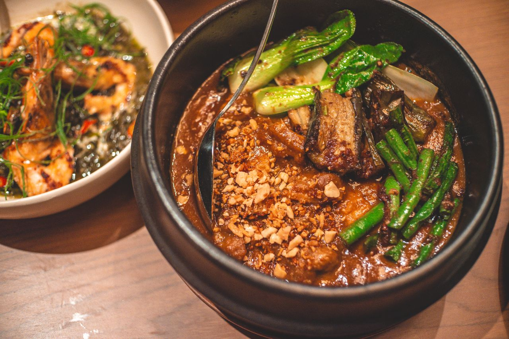

Kare-Kare Recipe

Kare-Kare: Rich and Savory Filipino Stew
Kare-Kare is a beloved Filipino comfort food, traditionally served during special occasions, town fiestas, and family gatherings. Its history is a fascinating tapestry of cultural exchange, with roots tracing back to the Sepoy soldiers from India who settled in the regions of Rizal and Pampanga during the British occupation in the 18th century. Left to recreate their familiar curries without local Indian spices, they developed a unique dish using toasted rice and peanuts. Over centuries, it evolved into a crowning jewel of Kapampangan cuisine and a universally cherished staple across the entire archipelago.
The flavor profile of Kare-Kare is uniquely rich, nutty, and subtly sweet, offering a comforting warmth that pairs perfectly with rice. The dish features tender cuts of oxtail, beef tripe, or pork knuckles simmered into a thick, luxurious sauce made from ground roasted peanuts and toasted rice flour. Earthy vegetables like banana blossoms, eggplants, string beans, and native bok choy absorb the savory essence of the broth. Because the stew itself is mild, it is traditionally eaten with a side of salty, pungent bagoong alamang (fermented shrimp paste), creating a spectacular sweet-and-savory contrast that defines the dish.
Ingredients (6 servings):
- 3 pounds oxtail, cut into 2-inch pieces
- 2 tablespoons vegetable oil
- 1 medium onion, chopped
- 1 tablespoon minced garlic
- ¾ cup smooth peanut butter
- ½ cup toasted rice flour (dissolved in 1 cup broth)
- 1 teaspoon annatto powder (dissolved in ¼ cup warm water)
- 1 medium banana blossom, sliced
- 1 bunch string beans, cut into 2-inch pieces
- 2 medium eggplants, sliced
- 1 bunch bok choy
- Fermented shrimp paste (bagoong alamang), for serving
Directions:
-
Step 1: Place oxtail in a large pot, cover with water, and bring to a boil. Reduce heat to medium-low, cover, and simmer until the meat is fork-tender, about 2.5 to 3 hours. Strain and reserve the broth, setting the meat aside.
-
Step 2: Heat vegetable oil in a clean pot over medium heat. Sauté onion and garlic until fragrant and softened, about 3 minutes.
-
Step 3: Pour in 4 cups of the reserved beef broth, then stir in the peanut butter and annatto water. Bring to a gentle simmer, then stir in the dissolved rice flour mixture to thicken the sauce.
-
Step 4: Return the tender oxtail to the pot. Add the vegetables in stages, starting with the banana blossom and eggplants, followed by the string beans and bok choy. Simmer until the vegetables are tender, about 5 to 7 minutes. Serve hot with shrimp paste on the side.
Home